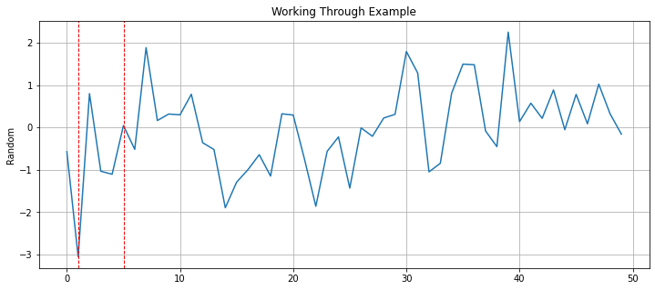
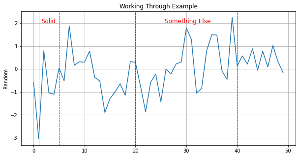
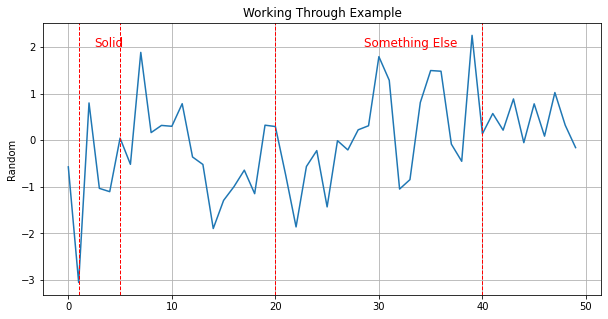
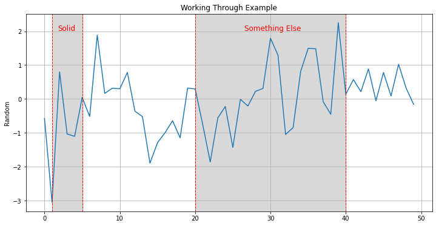
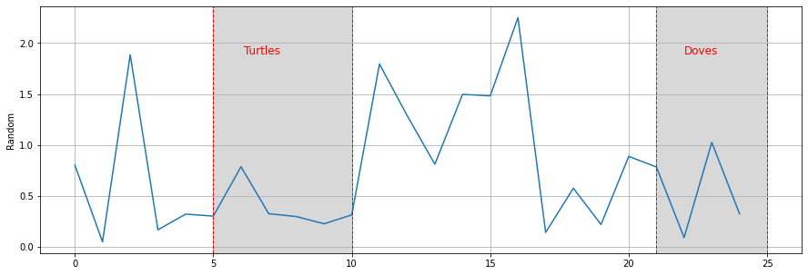

# our pretend dataset
data = np.random.randn(50)
data = pd.DataFrame(data, columns=['Random'])While browsing around for inspiration, I found this wonderful post by someone named SonyMonthonaRK on Medium; the post is here since it contains more than what I’ll be talking about. The graph is simple aside from the red highlighted box around relevant information: seen below: 
I’ve seen this effect before but never actually seen the code for it. Thankfully, he provided the a link to it on their Github page since I wanted to learn this trick. The Good news is that the effect is not complicated; the bad news is that it’s implementation here is conditional and ugly. We’re going to copy it here just for reference:
plt.figure(figsize=(15,10)) # mengatur ukuran figure
sns.lineplot(x='month', y='average_num_booking', hue='hotel_type', color= 'gray',
size="hotel_type", sizes=(2.5, 2.5), data=df1_gr) # plot awal menggunakan lineplot dari library seaborn
plt.tick_params(axis='both', which='major', labelsize=14) # memperbesar ukuran x-y axis label
plt.grid() # menambahkan gridline
plt.legend(title='Hotel Type', title_fontsize=15, prop={'size':13}) # mengatur judul dan ukuran font pada legenda
plt.xlabel('Arrival Month', fontsize=15) # mengatur title pada x-axis
plt.ylabel('Average Number of Booking', fontsize=15) # mengatur title pada y-axis
plt.ylim(0, 4800) # membatasi y axis
plt.axvline(4, ls='--', color='red') # membuat garis vertikal untuk menghighlight insight
plt.axvline(6, ls='--', color='red') # membuat garis vertikal untuk menghighlight insight
plt.text(x=4.5, y=4400, s='Holiday \nSeason', fontsize=16, color='red') # menambahkan teks keterangan
plt.stackplot(np.arange(4,7,1), [[4800]], color='grey', alpha=0.3) # memberikan blok warna pada area yang dihighlight 2 garis vertikal
plt.axvline(9, ls='--', color='red') # membuat garis vertikal untuk menghighlight insight
plt.axvline(11, ls='--', color='magenta') # membuat garis vertikal untuk menghighlight insight
plt.text(x=9.5, y=4400, s='Holiday \nSeason', fontsize=16, color='red') # menambahkan teks keterangan
plt.stackplot(np.arange(9,12,1), [[4800]], color='grey', alpha=0.3) # memberikan blok warna pada
plt.text(x=-0.5, y=5200, s="Both Hotels Have More Guests During Holiday Season",
fontsize=20, fontweight='bold') # memberikan judul yang informatif
plt.text(x=-0.5, y=4850, s="City Hotel has the decreased guests in August and September, while both hotels have less \ncustomer during not holiday season (Jan-Mar)",
fontsize=18) # memberikan keterangan tambahan atas judul
plt.tight_layout() # mengatur layout dari visualisasi agar tidak terpotongThis is a lot of - specialized and inflexible - code to add an affect to a graph. If I wanted to add this to my own graphs then I would have to do quite a bit of work and math and customization. I want this on any graph at any point without doing all this work. So, let us take it apart and make a function we can all use. We’re not going to use their data since we want to apply it to any random set of data so we’re using random data.
Much of that is boilerplate and repetition so the summary of a single application would be:
# Initialize the lineplot
# Add the left dotted line
# Add the right dotted line.
# Add the notated text
# Add a stackplot to fill the space between the linesWe’ll cover the plot first since it’s the easiest and can go outside of the function we’re trying to build. We’ll use the seaborn lineplot the same. We’ll need use an index similar to the example post while we build this - so a simple range:
p = sns.lineplot(x=range(0, len(data)), y="Random", data=data)We’ll want to save the graph reference as we’ll need it for later.
Looking at the docs for the horizintal line function, we need: 1. The x tick value. 2. The line display type. 3. The color
We’re going to also modify the line width in our example and fix it; you are welcome to modify this function to accept a thicker value but I like it at 1 and have no current reason to change it. We will need the left and right line points passed to the function as a starting point; we’ll hold the other values constant for now.
def building(p = None, xCoord = None):
# Add the lines:
plt.axvline(xCoord[0], ls='--', lw=1, color='red')
plt.axvline(xCoord[1], ls='--', lw=1, color='red')
plt.figure(figsize=(12,5))
p = sns.lineplot(x=range(0, len(data)), y="Random", data=data)
plt.grid()
building(p, (1,5))
plt.title("Working Through Example")Text(0.5, 1.0, 'Working Through Example')
Good start. The next problem will be adding the text inside the box and how to position the text automatically. We could brute force - and in some instances we might have no other choice - but that is not convenient while we’re automating the function. How I solved this is to think about what we’re doing in mathematical terms. 1. Find the center of the x values range. 2. Translate the text to the left based off the figure size and the length of the text.
So, first we find the middle point by taking the difference of both sides, dividing it by two and then adding that to the left side.
def building(p = None, xCoord = None, text=None, xText=None):
# Add the lines:
plt.axvline(xCoord[0], ls='--', lw=1, color='red')
plt.axvline(xCoord[1], ls='--', lw=1, color='red')
# Ignore this for now; we simply need it
y_min, y_max = p.get_ylim()
yPos = y_max*.8
xText = xCoord[0] + (xCoord[1] - xCoord[0])/2
plt.text(x=xText, y=yPos, s=text, fontsize=12, color='red')
plt.figure(figsize=(12,5))
p = sns.lineplot(x=range(0, len(data)), y="Random", data=data)
plt.grid()
building(p, (1,5), "Solid")
plt.title("Working Through Example")Text(0.5, 1.0, 'Working Through Example')Next, we’ll need to get the figure size as well as the length of the text. Thankfully, matplotlib allows you to get the dimensions of the figure using .figure.get_size_inches().
def building(p = None, xCoord = None, text=None, xText=None):
# Add the lines:
plt.axvline(xCoord[0], ls='--', lw=1, color='red')
plt.axvline(xCoord[1], ls='--', lw=1, color='red')
# Ignore this for now; we simply need it
y_min, y_max = p.get_ylim()
yPos = y_max*.8
width, _ = p.figure.get_size_inches()
lenText = len(text)
xText = xCoord[0] + (xCoord[1] - xCoord[0])/2
plt.text(x=xText, y=yPos, s=text, fontsize=12, color='red')
plt.figure(figsize=(12,5))
p = sns.lineplot(x=range(0, len(data)), y="Random", data=data)
plt.grid()
building(p, (1,5), "Solid")
plt.title("Working Through Example")Text(0.5, 1.0, 'Working Through Example')Now that we have these values, we can think about how to move them. The answer is this formula: lenText * 3/width.
def building(p = None, xCoord = None, text=None, xText=None):
# Add the lines:
plt.axvline(xCoord[0], ls='--', lw=1, color='red')
plt.axvline(xCoord[1], ls='--', lw=1, color='red')
# Ignore this for now; we simply need it
y_min, y_max = p.get_ylim()
yPos = y_max*.8
width, _ = p.figure.get_size_inches()
lenText = len(text)
xText = xCoord[0] + (xCoord[1] - xCoord[0])/2 - 3 * lenText/width
plt.text(x=xText, y=yPos, s=text, fontsize=12, color='red')
plt.figure(figsize=(10,5))
p = sns.lineplot(x=range(0, len(data)), y="Random", data=data)
plt.grid()
building(p, (1,5), "Solid")
# Showing you can simply run this more than once
# to add another box highlight
building(p, (20,40), "Something Else")
plt.title("Working Through Example")Text(0.5, 1.0, 'Working Through Example')
So, why does this work? Frankily, I’m not sure quite sure where the three comes from here. Normalizing the number of characters by the figures width make sense but that alone is not enough; you can see this in the below example.
def building(p = None, xCoord = None, text=None, xText=None):
# Add the lines:
plt.axvline(xCoord[0], ls='--', lw=1, color='red')
plt.axvline(xCoord[1], ls='--', lw=1, color='red')
# Ignore this for now; we simply need it
y_min, y_max = p.get_ylim()
yPos = y_max*.8
width, _ = p.figure.get_size_inches()
lenText = len(text)
xText = xCoord[0] + (xCoord[1] - xCoord[0])/2 - lenText/width
plt.text(x=xText, y=yPos, s=text, fontsize=12, color='red')
plt.figure(figsize=(10,5))
p = sns.lineplot(x=range(0, len(data)), y="Random", data=data)
plt.grid()
building(p, (1,5), "Solid")
# Showing you can simply run this more than once
# to add another box highlight
building(p, (20,40), "Something Else")
plt.title("Working Through Example")Text(0.5, 1.0, 'Working Through Example')
Anyways, we’ll leave what works for now and move to the last problem which is much easier to solve: the stackplot. If you’re not familiar with these graphs then it’s more than likely you’re unfamiliar with the name and not the plot itself. These are used to show percentage change of different categories - usually over time. A good example would be the follow image from the website Geeksforgeeks: 
Except what we want is one box full of a single color: grey. Maybe there is a better way to do this but we’re going to base our work off the post and it will work anyways. For a stackplot we need: 1. The coordinates to fill. 2. The values.
In the example, the height is filled with a known value: 4800. But this value is the distance from the x-axis and we cannot use this in our example - nor will this generalize. Since their data does not have negative values this works fine but sometimes we will have negative values. What we will need to do is find a fill value. We could use the figure height but there is a case where the total distance can be greater than the figure height strangely enough. What we’ll do is take the sum of the absolute values of the y_min and y_max values + 1. Then, if that values is larger than the height we’ll use that instead.
def building(p = None, xCoord = None, text=None, xText=None):
# Ignore this for now; we simply need it
y_min, y_max = p.get_ylim()
p.set_ylim(y_min, y_max)
yPos = y_max*.8
# Collecting height here:
width, height = p.figure.get_size_inches()
totalDist = abs(y_min) + abs(y_max) + 1
stackFill = height
if totalDist > height:
stackFill = totalDist
lenText = len(text)
xText = xCoord[0] + (xCoord[1] - xCoord[0])/2 - 3 * lenText/width
# Add the lines:
plt.axvline(xCoord[0], ls='--', lw=1, color='red')
plt.axvline(xCoord[1], ls='--', lw=1, color='red')
plt.text(x=xText, y=yPos, s=text, fontsize=12, color='red')
plt.stackplot(np.arange(xCoord[0],xCoord[1]+1,1), [[stackFill]], baseline = "sym", color='grey', alpha=0.3) plt.figure(figsize=(12,6))
p = sns.lineplot(x=range(0, len(data)), y="Random", data=data)
plt.grid()
building(p, (1,5), "Solid")
# Showing you can simply run this more than once
# to add another box highlight
#
building(p, (20,40), "Something Else")
plt.title("Working Through Example")Text(0.5, 1.0, 'Working Through Example')
You may be asking what the baseline="sym" argument is since it’s not very descriptive. All that does is changes the relationship from 0 start to Symmetric around the x-axis which we needed for negative values. And, speaking let us test that we can filter for positive values and this all still works.
tmp = data.query("Random >= 0")
plt.figure(figsize=(15,5))
p = sns.lineplot(x=range(0, len(tmp)), y="Random", data=tmp)
plt.grid()
building(p, (5, 10), "Turtles")
building(p, (21, 25), "Doves")
Excellent. The Doves to my eyes looks a little off center but that should be good enough. Just add a little bit of error handling and we’ve got a generalized highlight box function!
def addDotBox(p = None, xCoord = None, text=None, xText=None, yText=None, fSize = 12):
if not p:
raise ValueError("Plot cannot be None Type.")
if not text:
raise ValueError("text cannot be left blank.")
# Pull/reset the limits:
y_min, y_max = p.get_ylim()
p.set_ylim(y_min, y_max)
# get
width, height = p.figure.get_size_inches()
totalDist = abs(y_min) + abs(y_max) + 1
stackFill = height
if totalDist > height:
stackFill = totalDist
lenText = len(text)
if not xCoord:
raise ValueError("Missing xCoord argument.")
if len(xCoord) != 2:
raise ValueError("There must be two values for xCoord")
if not xText:
xText = xCoord[0] + (xCoord[1] - xCoord[0])/2 - 3 * lenText/width
if not yText:
yText = y_max * .8
plt.axvline(xCoord[0], ls='--', lw=1, color='red')
plt.axvline(xCoord[1], ls='--', lw=1, color='red')
plt.text(x=xText, y=y_max*.8 , s=text, fontsize=fSize, color='red')
plt.stackplot(np.arange(xCoord[0],xCoord[1]+1,1), [[stackFill]], baseline = "sym", color='grey', alpha=0.3)